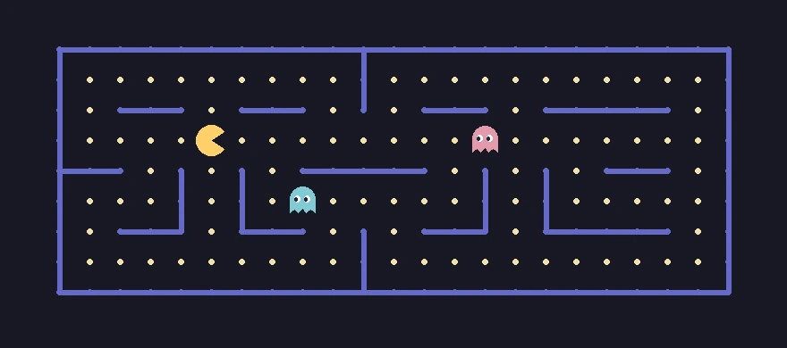

← Selected workPacman AI
Python
For this semester-long project, I developed a Pacman agent that operates in a competitive multi-agent environment. The project applies foundational AI search and adversarial strategies.
- Controls Pacman and ghost agents using minimax, alpha-beta pruning, and expectimax algorithms.
- Balances offensive food collection and defensive ghost evasion.
- Makes real-time decisions based on probabilistic reasoning and search-based planning.

Illustration of the planning problem